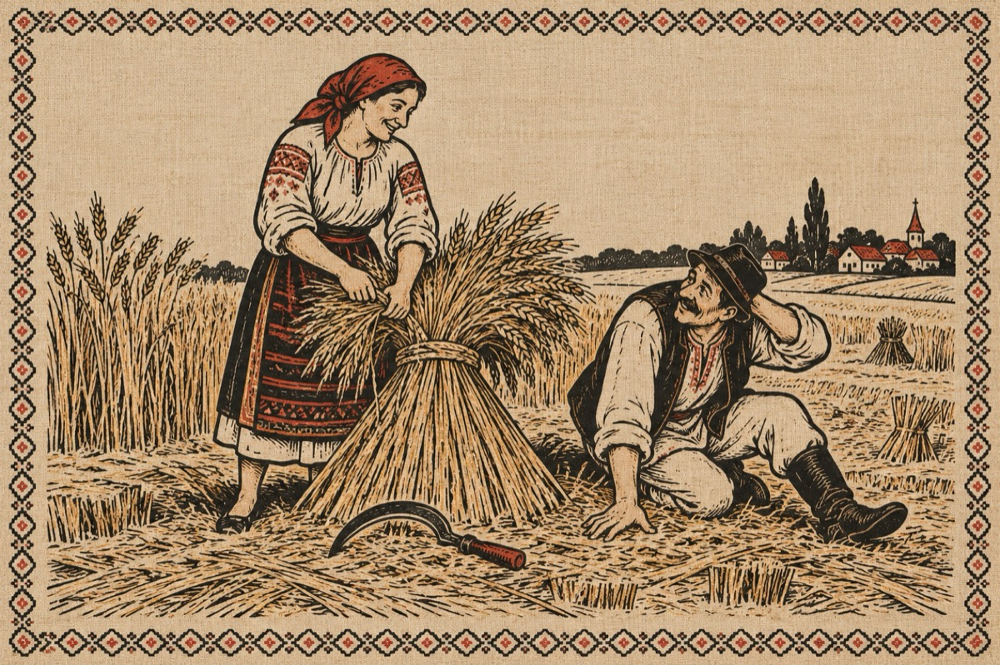

Văsălie la seceră
– Tu Mărie copt-îi grâul
Trebă săcerat musai
Pleacă-te mai gios cu brâul
Că io iacă mă-nburdai.
– Văsălie, nu știai
Grâul trebă săcerat
Păntru spic nu păntru pai
Țâie-ți arde de țucat!?
Grâul trebă făcut snop
Ș-adunat pă urmă-n claie
Iar tu vii ca un potop
Să ce țâpi pă mine-n paie!?...
– Nicidecât mă-npiedica-i
Ș-ajunsei din întâmplare
Mărmurit și fără grai
Drept la tine pă picioare!
– Văsălie, Văsălie,
Grâu-n pârg stă pă câmpie
Iar tu-l calci fără să-l tai
Spune-mi pă cine ai bai?
– Las’ Mărie grâu-n pace
C-om face pită din el
Știu că șâ țâie-ți place
Să ne tăvălim nițel!...
Vasile Groza